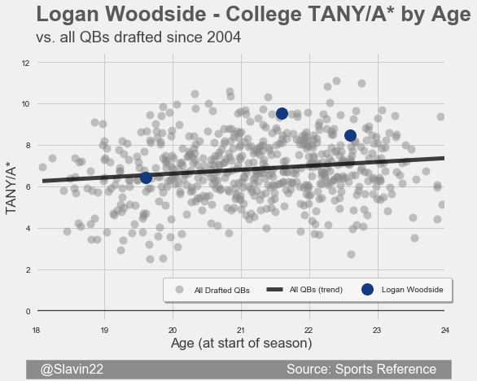
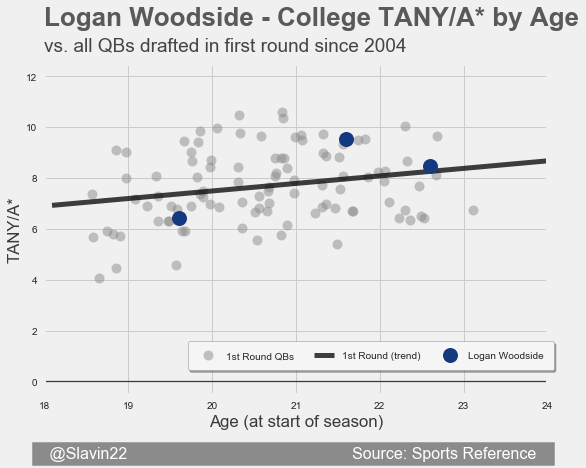
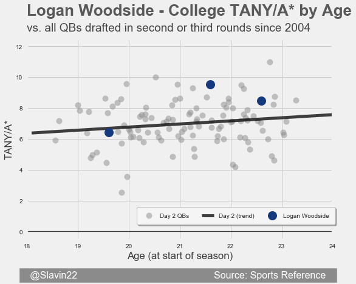
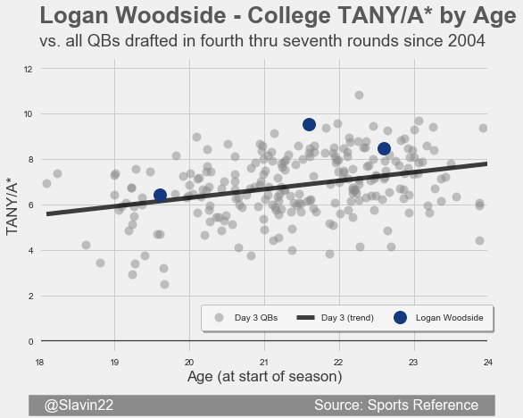

Logan Woodside

| School | Rookie Age | Height | TANY/A* | Breakout Age | Mobility |
|---|---|---|---|---|---|
| Toledo | 23.6 | 6'2" | 8.11 (Great) | 21.6 (Good) | 1.5% (Mediocre) |
TANY/A* by Age compared to: All QBs drafted | First Round QBs | Day 2 QBs | Day 3 QBs




My Take
Logan Woodside is my favorite QB prospect outside of the first round this year. Of the QBs projected to land in the mid or late rounds, he's the statistical darling. His career TANY/A* sits between Lamar Jackson and Mason Rudolph for 3rd in the 2018 class. He had a breakout season as a junior at the age of 21. While he took a step back as a senior, his efficiency was still just above the average for first round QBs in that age range. He's a smaller QB from a non-Power 5 conference, so it's not surprising scouts are down on him. I would confidently take him in the fourth round of the NFL Draft, and the team that lands him will likely get a better value than that. That still translates to just a late flier pick in deep 2QB dynasty leagues.